INTRODUCTION - ELECTRICAL CIRCUIT FOR INSTRUMENTS/INDICATORS
- Path
- Descriptions > 55 ELECTRICAL EQUIPMENT > 5505 INSTRUMENT/GUAGE ELECTRICAL WIRING > INTRODUCTION - ELECTRICAL CIRCUIT FOR INSTRUMENTS/INDICATORS
- Kind
- system description
- Applies to
- all engines; all production periods
- Interactive page
- https://sloeber94.github.io/elrnDB-aGt/en/#/125000398
Applies to: all engines; all production periods
VE.N.I.C.E PLUS ELECTRICAL AND ELECTRONIC SYSTEM
GENERAL CHARACTERISTICS
In conventional electrical systems, functions are activated with the aid of dedicated point-to-point connections.
As the number of eletrical/electronic devices on board new vehicles has increased, the connection are becoming more complex and heavy. One reason for this is the complexity of functions implemented in the many electronic units, which require a continual interchange of data. All this makes it more difficult to install new electrical systems and increases the complexity of fault diagnosis.
Many problems have been resolved and new electrical systems have been optimised compared to conventional systems by means of networking. This provides a more effective means of managing communication on board the car and for the transfer of information between subsystems via the serial buses present: single wires, pairs of twisted wires or even optical fibres.
VE.N.I.CE (VEHICLE NETWORK INTEGRATION COMPONENT ELECTRONICS) ARCHITECTURE
This is an application of the tried and tested multiplexing or (MUX) system The VE.N.I.CE PLUS system optimises the electrical system because each control unit is located in the centre of the functions it manages. This allows minimisation of the power and signal distribution system through the extensive use of serial communication networks.
Power distribution takes place through junction units connected to the control elements (relays, actuators etc.) to ensure the maximum electrical protection and the minimum wiring complexity.
The wiring architecture is reduced because each system function requires fewer dedicated cables because the wires (ABS, airbag, sidebag) are built into the front, facia or rear wiring harness. This also makes installation easier.
Systems of this type offer innumerable advantates; for example:
- sensors in the various subsystems are made available to the network;
- information may be shared;
- similar sensors can be done away with;
- system flexibilty is increased;
- new functions can be added only by modifying the software (developed during the vehicle life),
- wiring design is simplified and the number of connectors is reduced,
- electronic device operating safety is increased to improve the reliability of information transmited,
- an integrated diagnostic function simplifies service operations on electric/electronic components.
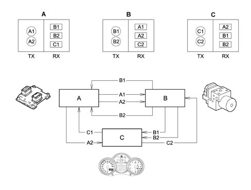
Tx - information to be transmitted to the nodes A (A1,A2) B (B1, B2) C (C1, C2)
Rx - information received from nodes (B1, B2, C1) B (A1, A2, C2) C (A2, B1, B2)
Classic solution
The three control units (electronic nodes) require a number (N) of wires for each input/output in order to perform their function. This has created so much wiring that the system is more complex (design and manufacture), more bulky (weight, bulk and cost) and requires some 40 kg of wiring harnesses amounting to a length of more than 2 km. This requirement is likely to double every 10 years because even now one such vehicle may be equipped with 20 to 40 control units (ECUs).
The first step that allowed us to reduce the volume and the complexity of the wiring harnesses was to group several electronic functions in a single unit: fewer control units = fewer wires.
Examples of integration
The engine control unit (NCM) manages injection, ignition, pollution system and engine cooling etc.
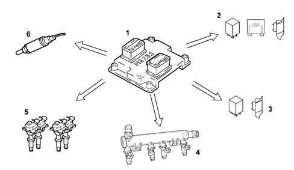
1 - Engine management control unit
2 - Engine cooling fan- first speed
3 - Engine cooling fan - second speed
4 - Injectors (injection)
5 - Coils (ignition)
6 - Lambda probe
The multifunction control unit that manages: front window operation, door lock/release, timed passenger compartment and boot lighting, heated rear window timed activation and door mirror demisters.
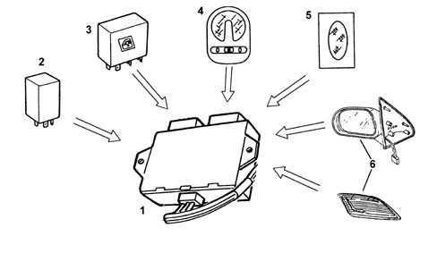
1 - Multifunction control unit
2 - Door lock/release control unit
3 - Electric window control unit
4 - Timed front courtesy lights
5 - Timed luggage compartment light
6 - Activation of door mirrors and heated rear window for timed demisting
The integration of electrical/electronic functions in a single electronic unit (ECU) has allowed us to improve:
- power consumption management (lower battery usage);
- functionality of appliances because they are managed by a single control unit;
- fault diagnosis due to control unit self-diagnosis.
This first stage has allowed us to reduce the number of electronic units but not to reduce the volume of wiring harnesses sufficiently.
Multiplexing solution
Involves exchanging information between different electronic units on a single transmission channel (principle already used for the phone network, radio, TV etc.): 1 BUS (2 wires) for all information
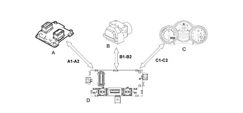
A-B-C - Nodes (ECU)
A1-A2-B1-B2-C1-C2 - Communication bus
D - Body Computer master control unit
This second stage allows a decisive improvement because:
- Wiring is simplified and reduced
- Number of sensors is reduced (sharing of information)
- Electronic units communicate with one another.
Obviously, the greater the number of systems requiring interconnection , the more attractive the MULTIPLEXING solution appears
In general, in order to send data via multiplexing, we need to define the following with precision:
- transmission channel (wires, optical fibres, radio waves etc.);
- signal type on the channel (voltage, current, light etc.);
- communication protocol (all the rules that allow management of analogue or digital transmission management, code type, address, transmission order, error recording etc.).
On our cars, the transmission medium or channel is a pair of wires known as a BUS. Under this system, packages of information are transmitted one after another without a set rigid sequence but according to the control units' needs). The signals are generated as voltages and the protocol used is CAN (controller area network), a system Robert Bosch in 1983 and has been developing ever since.
Can (controller area network) network structure
To allow the exchange of information, electrical/electronic systems in VENICE PLUS communicate via two physically separate networks known as low speed B-CAN and high speed C-CAN. Data to be shared between the B-CAN and C-CAN networksare managed by the Body Computer which acts as a system gateway because it is equipped with both interfaces. Via this device, two different network architectures are able to connect and convert certain application protocols into equivalent protocols in the other system.
In practice, the body computer transfers information from the B-CAN (low speed) network to the C-CAN (high speed) network through the gateway and viceversa. Transfer may take place in two ways:
- directly: i.e. the entire message is copied to the other network exactly as it is;
- fragmented: i.e. the message received is broken down into its fields (signals) and recomposed as a new message by the other network.
Connection of low speed can (b-can)
In order to transfer information, all the electrical/electronic units are connected to the network via integrated, compatible interfaces in order to receive and transmit data.
The B-CAN network (low speed) may feature up to 10 nodes (one per each control unit), all connected via a wire pair (CAN BUS). Maximum BUS length must not exceed 20 m and transmission speed is 50 kbit/sec.
The electronic units shown in the figure are connected to the B-CAN network (low transmission rate).
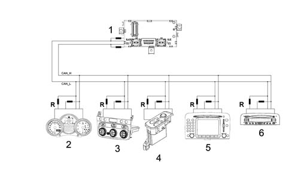
1 - Body Computer (NBC)
2 - Instrument panel node ECU (NQS)
3 - Climate control system ECU (NCL)
4 - Driver's door node ECU (NPG)
5 - Info-telematic node ECU (NIT)
6 - Radio receiver node ECU (NRR)
R - Termination resistances (incorporated)
The network interface records overall and local faults; it avoids data loss in accordance with the following list of anomalies, which may be present on the B-CAN network
Example:
- CAN wire or line (H) interrupted
- CAN wire or line (L) interrupted
- CAN wire or line (H) short-circuited to battery (+)
- CAN wire or line (L) short-circuited to battery (+)
- CAN wire or line (H) short-circuited to earth (-)
- CAN wire or line (L) short-circuited to earth (-)
- CAN wire or line (H) short-circuited to wire or line (L)
The network interface loses any possibility of communication if both lines (H and L) are interrupted or if the two lines (H and L) are short-circuited and simultaneously connected to the car earth.
Network termination/polarisation
The termination resistances do not close the B-CAN line (H and L) like a loop but are connected directly to the CAN node, i.e. the transceiver of each individual ECU.
High speed can (c-can) connection
For the transfer of information, all electric/electronic units relating to the high speed C-CAN chain are equipped with a compatible interface for data reception and transmission.
The C-CAN network (high speed) may serve up to 6 nodes (one for each ECU, all connected via a wire pair (CANBUS). Maximum BUS length must not exceed 10 m. Transmission speed is 500 kbit/sec.
One fundamental requirement of C-CAN BUS wires is that they should be in plaited or twisted pairs. By winding two electrical wires into a plait or coil, the degee of immunity to electromagnetic interference of external origin is reduced.
On the C-CAN network (high transmission speed), the following electronic units are connected to the Body Computer (NBC):
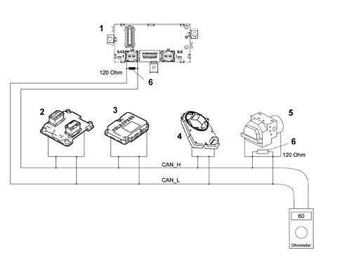
1 - Body Computer (NBC)
2 - Engine management ECU (NCM)
3 - Selespeed transmission ECU (NCR)
4 - Steering angle sensor ECU (NAS)
5 - ABS brake system ECU(NFR)
6 - 120 Ohm termination resistance on Body Computer and brake system node.
The network interface cannot communicate at all if once of the following situations arises on the C-CAN network:
- interruption of one of the two lines (H and L)
- short-circuit between the two lines (H and L)
- short-circuit between one line (H) (L) on the battery (+),
- short-circuit of one line (H) (L) to earth (-).
Termination/polarisation
The termination resistances that close the C-CAN line (H and L) are present only in the Body Computer nodes (NBC) and brake system nodes (NFR). These take the form of two 120 Ohm parallel resistances on the BUS line that close to form a loop and thus create an impedence of 60 ohms (impedence seen from each node).
Control units connected to the serial line
The following figure shows the control units connected to serial lines.
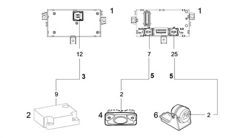
1 - Body Computer (NBC)
2 - Airbag control unit (CAB)
3 - Two-way K line
4 - Volumetric sensor control unit (CAV)
5 -Serial lines
6 - Antitheft siren control unit (CSA)
VENICE PLUS SYSTEM STRUCTURE
The structure of the VENICE PLUS system is as follows:
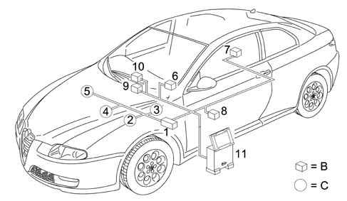
1- NBC Body Computer node
2 - NFR brake system node
3 - NAS steering angle node
4 - NCM engine control node
5 - NCR robotised transmission node
6 - NQS instrument panel node
7 - NVB boot compartment node
8 - NPG driver's door node
9 - NCL climate control system node
10 - NIT/ NRR info-telematic node or radio node
11 - NSD tester (examiner) node
B = low speed CAN network
C = high speed CAN network
Basic diagram of ve.n.i.ce architecture showing main nodes
The following diagram shows the main nodes
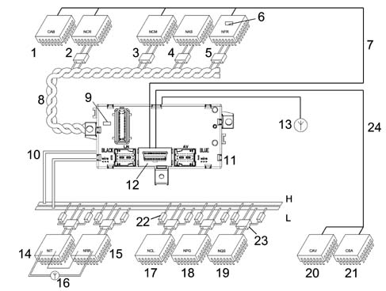
1 - CAB airbag control unit
2 - NCR robotised gearbox node
3 - NCM engine control unit node
4 - NAS steering angle sensor node
5 - NFR braking system node
6 - Termination resistance on NFR
7 - Serial line K
8 - C-CAN network high transmission speed twisted line (controller area network): H = high signal; L = low signal
9 - Termination resistance on NBC
10 - B-CAN network low transmission speed parallel line (double): H= high signal; L = low signal
11 = NBC Body Computer node (master unit)
12 - 16 PIN EOBD tester connection (eletronic on board diagnostic)
13 - Alfa Code aerial
14 - NIT info-telematic node
15 - NRR radio receiver node
16 - GPS - GSM aerial
17 - NCL Climate control system node
18 - NPG Driver's door node
19 - NQS Instrument panel node
20 - CAV volumetric sensor control unit
21 - CSA antitheft siren control unit
22 - Termination resistance
23 - Communication interface (transceiver) built into the node
24 - Serial line for antitheft/alarm control unit
In addition to the two B-CAN and C-CAN networks, the system includes the following serial lines:
- diagnostic k linefor Engine Control Node, Airbag Control Unit, Robotised Gearbox Node,
- W line for immobilizer recovery (Alfa Code), dedicated line between pin 3 NCM and pin 22 NBC
- serial line for Antitheft Siren Control unit/Volumetric Alarm control unit
Eobd connector (electronic on-board diagnostic)
All the diagnostic lines run into the central EOBD connector on the Body Computer The same connector carries out diagnostics on the nodes (control units) connected to the low transmission speed B-CAN network, while the high transmission speed C-CAN network dynamic power train control network is diagnosed via a specific k line.
The ECUs in the two CAN networks are programmed and operate by storage, processing and transmission of data and information by means of a binary convention, i.e. two symbols that refer to two basic electrical states: absence of voltage or presence of voltage; i.e. open circuit or closed circuit; i.e. level (0) zero or level (1) one Levels (0) and (1) constitute the basic information unit and are known as a BIT (binary digit).
Binary
ECUs use a binary language compatible with their electronic circuits (high low) (open closed etc.): data must therefore be handled in accordance with particular codes in order to transmit data. Various codes have therefore been developed to meet all requirements.
One of the most common is ASCII (American Standard Code for Information Interchange). This alphanumerical code uses coded groups of bits and can represent the 26 letters of the British alphabet, plus the ten decimal figures in addition to punctuation marks and commands. ASCII is an eight-bit binary code. Seven bits are used to codet the information and the eighth is used to control errors. Using seven bits per character it is possible to code no fewer than 128 information items including decimal numbers, upper and lower case letters of the alphabet, punctuation marks etc.Once the number of bits in a word (i.e. the word length), has been fixed by a data code, this number must not be changed.
A group of eight bits is known as a byte and represents no fewer than 256 values: this number is obtained by considering all possible combinations of (0) and (1) in the eight available byte positions, e.g. 00000001, 00001111, 11111111 etc. The number 256 (2 exp. 8) allows us to consider a set of alphabetical characters, punctuation marks, accented characters or special characters etc. In essence, a single byte may represent a number, a letter of the alphabet, a punctuation mark or a special character. The byte is used as a unit of measurement to describe quantities of data stored and storage capacity of storage devices.
As with units of measure, byte are also defined as multiples:
- 1 kilobyte (kb) = 1024 bytes = 2 exp. 10 (210 )
- 1 megabyte (Mb) = 1024 kb (about one million bytes)= 2 exp. 20 (220 )
- 1 gigabyte (Gb) = 1024 Mb (about one billion bytes) = 2 exp. 30 (230 )
- 1 terabyte (Tb) = 1024 Gb (about one trillion bytes) = 2 exp. 40 (240 )
Analogue:
So-called linear electronics concerns analogue effects, i.e. that are proportional, continuous.
A water tap is an example of an analogue switch because it can be used to shut off the water supply completely or turn it on fully, but can also be adjusted to all possible intermediate positions within the continuous range between closed and fully open states. The Tester mobile coil instrument is analogue: the needle can indicate the measurement position from zero to full scale deflection and also pass continuously along the graduated scale through all the points on its travel. It is often useful to determine a certain measurement by taking a value beween two marks on the scale within which the instrument pointer stops.
Digital:
A digital electronic system proceeds in discrete jumps, i.e. quantifiable steps. A light switch is an example of digital operation because it can only take up well-defined, distinct states. Two in this case: on and off, without intermediate positions. In practice, a digital gauge with warning lights or numbers proceeds in steps and it is not possible to determine, for example, the exact level of a liquid between the state when the warning light is on and the state when the level gauge warning light is of.
The sensitivity is therefore of the step due to the interval between one warning light and another but the reading is precise and not subjective.
It is possible to place a series of steps between one warning light and the next with the same number of lighted indicators - and so until the measurement is taken in such small steps that it is almost the same as the continuum measured by the analogue gauge. The similarity is more apparent than real because each step travelled by the digital indicator, however small, determines a well-defined position and an unequivocal value that is above all not subject to reading errors of parallax or interpolation. To sum up, the sensitivity of a digital instrument is unparalleled and the reading precision is much higher.
OPERATION OF THE MULTIPLEX NETWORK (VE.N.I.CE PLUS SYSTEM)
In the VeNICE architecture, the system designers made the Body Computer responsible for control functions.
The additional Body Computer functions provide information on:
- network activity status;
- the functional failure status of individual node ECUs;
- CAN network failure.
The Body Computer node 'wakes the system up' when the ignition key is turned to MAR.
In the event of an NBC failure, the network is woken up by the Instrument panel node (NQS) which intervenes only if the system is not woken up by the Body Computer for a certain time after the key is turned to ON to prevent network conflicts.
Each 'Node' ECU processes the various signals from the respective sensors for their management and that of the other ECUs.
For greater clarity, the following drawings illustrates a possible data sharing procedure between units connected in a network.
In the latest generation of electrical systems a very high number of electronic units can be interconnected and a very high number of packages can therefore be handled. For this reason, these systems use one or more CAN networks which allow better information exchange between the various electronic units compared with conventional wiring.
The physical medium used for the B-CAN network (low transmission speed) is a double copper electrical wire (not necessarily plaited) while C-CAN networks (high transmission speed) require a plaited wire; with one of the two wires associated with the high level (H) and the other with the low level (L). The CAN bus signals are differential, i.e. the value assigned to each bit is represented by the different voltage of CAN (H) and CAN (L).
The combined use of two cables and differential signals allows data packages to be exchanged beween the various control units via the CAN network, even in the presence of electromagnetic interference.
Transmission and exchange of data on the B-CAN and C-CAN and the transfer of information between a low speed network and a high speed network and vice versa takes place in the body computer node (gateway function).
DIAGRAM SHOWING CONNECTIONS OF BOTH NETWORKS AND PIN OUT
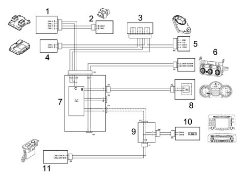
1 - Engine control unit node (NCM)
2 - Brake system node (NFR)
3 - Interconnection
4 - Robotised gearbox node (NCR)
5 - Steering sensor node (NAS)
6 - Climate control system node (NCL)
7 - Body Computer Node (NBC)
8 - Instrument panel node (NQS)
9 - Facia (control unit) node (CPL)
10 - Infotelematic node/radio receiver node (NIT/ NRR)
11 - Driver's door node (NPG)
B - network B- low transmission rate CAN
C - network C - high transmission rate CAN
The message emitted on a CAN network (multiplexed) by an ECU or node is known as a data package. It consists of a series of pulses as described previously (i.e. bits) that take the value (1) or (0) to denote the presnce or absence of a signal.
DEVELOPMENT OF CAN NETWORKS
Example of a future CAN network development
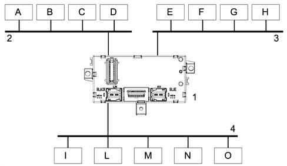
A - Radio
B - Air conditioner
C - Navigation system
D - Multifunciton display
E - Automatic transmission
F- ASR/BS
G - Suspension
H - Engine rpm
I - Optical blocks
L - Electric door mirrors
M - Electric windows
N - Electric seats with memory
O - etc.
1 - Body computer (supervisor)
2 - Comfort network
3 - Power network
4 - Body network
On future models, the CAN networks will increase in number and each network will have connections that interact with approrpiate modules. In the simplified example, you can see that three possible networks are characterised or subdivided:
- Body networks: body multiplexing is a network that simplifes the wiring to bring about a reduction in cost, an increase in reliability and more precise diagnosis. In a low baud rate network (baud rate = quantity of bits sent on the line in one second) from 32.5 to 62.5 KB/sec average response time 100 ms.
- Comfort network: comfort multiplexing allows the various nodes to share the display system. It is an average baud rate network from 125 to 500 KB/sec. The amount of information circulating is good and the response time is average from 125 to 500 kb/sec (between a command and an activation). This type of multiplexing is presen on the new Alfa GT.
- power network: fast multiplexing allows connected nodes to share information from their sensors, optimise strategies via the exchange of many information items between nodes on the same network. It is a medium/high baud rate network from 125 KB/sec to 1 MB/sec (MEGA BITsec). The average response time is 5 msec.
Future high range vehicles will have a fully multiplexed architecture with three or more types of multiplexing.
The Body Computer manages interactions between the various networks to allow (via gateways) the exchange of data packages between networks.
Can node
A CAN node is present on each sensor
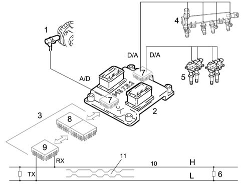
1 - rpm sensor
2 - Engine control node (NCM)
3 - CAN node (built into the control unit)
4 - Injectors (Ti injection time)
5 - Coils (spark plugs)
6 - Termination resistance 120 Ohm
7 - Engine control node microprocessor
8 - CAN controller
9 - Transceiver
10 - High speed CAN network (H-L)
11 - Data package input to the network
One of the design rules (to ensure sharing of the time window) relatingis to establish an average BUS user load for information transmitted in order to leave time margins when the BUSES are empty in order to ensure operation without hold-ups. The current fear is that in the case of an accident the nodes would reserve an enormous quantity of high priority data on the buses and would saturate them. Node data on a time line are admitted with different frequency according to priority
Numerical coding of an rpm signal on the c-can network
The block diagram illustrates the rpm signal (RPM)
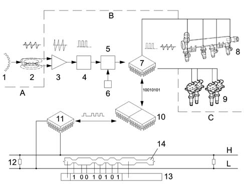
A - Sensor
B - Electronic unit
C -Actuators
1 - Engine pulley toothed ring gear
2 - RPM sensor - analogue signal
3 - Analogue signal amplifer
4- Digital signal trigger circuit (58 pulses per revolution)
5 - Binary counter
6 - Timed circuit (clock)
7 - Engine control unit microprocessor (NCM)
8 - Injectors
9 - Ignition coils/spark plugs
10 - CAN controller
11 - transceiver
12 - 120 Ohm termination resistances
13- Package of data admitted to the C-CAN network
14 - Start of second package
H-L - high transmission speed CAN BUS lines
The concept of dominant and recessive refers to a differential voltage level between the two BUS wires.
The teeth (maximum flow) and gaps (minimum flow) on the engine pulley toothed ring gear pass continuously in front of an rpm sensor to set up an emf or variable voltage pulses as indicated theoretically in the figure. In order to be used by the ECU microprocessor, the analogue rpm sensor signals must be amplified if they are weak (when ring gear speed is low or when the number of teeth is low) and converted to digital signals by means of a trigger circuit. The binary counter counts them: one pulse for each tooth. To prevent the numbering from going on to infinity, a time signal (clock) consisting of a transistorised circuit governed by a quartz every second restores the count to zero in order to start again. If we know the number of teeth on the ring gear, we can obain the crankshaft rotating speed. If a crownwheel has 240 teeth and turns at a speed of 1000 rpm, in one second 1000 ( 240 : 60 = 4000 teeth will pass in front of the sensor corresponding to 4000 impulses. If a binary counter clocks up 40000 impulses (bits) in a second, the crankshaft speed must be 1000 rpm. The speed will be higher than 1000 if it clocks up more than 4000 bits.
The rpm reduced to digital form is one of the many information items used by the microprocessor (7) in processing data; In practice, a program stored in the control unit memories is able to convert the processing results into signals that act as inputs to the work circuits: injection base pulse constant, current intensity and duration in the coil primary winding, injection operation or the supply of other actuators designed for different functions; since this signal is destined to be used by other nodes, the engine control unit makes it available on the C-CAN network via its CAN node. In practice, the control unit converts the rpm signal into binary numbers - the only type that can be used by the microprocessor. They are then relayed to the CAN controller (10), which prepares a data package made up of different blocks or fields (contained between a beginning and an end) and represents an entire series of information to be sent to other nodes.
The other interface, i.e. the CAN transceiver (11), decodes the package and sends it on the BUS network. In practice, it receives a series of pulses known as bits of value one (1) zero (0) that determine dominant or recessive voltage levels throughout the time the node transmits. All the other nodes that receive the package correctly confirm the reception (acknowledgement) on the BUS. All receiving nodes also carry out a test to check that the package (message) is relevant to them. Any node that finds relevant data in a package accepts it and processes it. Otherwise it ignores it.
High transmission speed c-can network
The HIGH SPEED C-CAN BUS is shown below
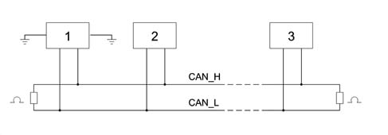
1 - Node 1
2 - Node 2
3 - Node n
The network displays the following feaures:
- differential voltage signals on both lines (with common return)
- BUSES with four nodes, transmission speed of 500 kbit/sec, length 10 m (a network this long can support up to 30 nodes, with transmission speeds up to 1 Mbit/sec and length up to 40 m)
- nominal terminal resistances: 120 Ohm ± 1% (200 mW),
- each node is capable of generating a differential voltage of between 1.5 V and 3 V measured on a resistive charge of 60 Ohms.
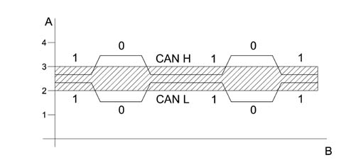
A - Voltage
B - Time
A recessive condition arises on the BUS in the following situation: the CAN H voltage level must exceed the CAN L voltage level by not more than 0.5 V.
CAN H and CAN L must not fluctuate outside a 2 - 3 V band. This means that bit (1) is sent.
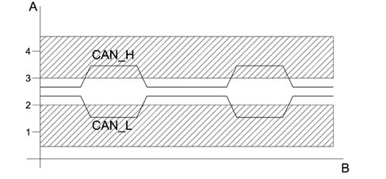
A - Voltage
B - Time
A dominant condition arises on the BUS in the following situation: the voltage level of CAN H must exceed the voltage level of CAN L by not more than 0.9 V.
CAN H must not fluctuate outside a band of 2.75 - 4.5 V. CAN L non cannot fluctuate outside a band of 0.5 - 2.25 V. This means that bit (0) is sent.
B-can network with low transmission speed
The LOW SPEED B-CAN BUS network can be represented as follows.
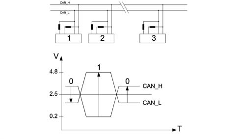
1 - CAN node 1
2 - CAN node 2
3 - CAN node n.
4V - Voltage
T - Time
- Termination resistance with calibrated value present on each individual node
- Minimujm differential voltage in recessive mode V CAN H 0.2 - V CAN L 4.8 = -4.6 Volt (bit 1)
- Minimum differential voltage in dominant mode V CAN H 3.6 - V CAN L 1.4 = +2.2 Volt (bit 0)
Interference limitation on can network
Representation of interference on network.
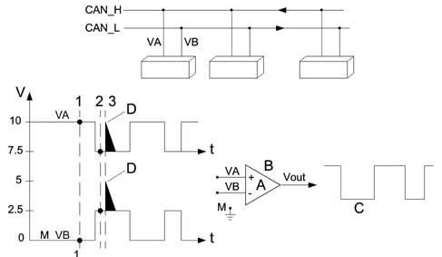
VA - voltage signal on channel H
VB - voltage signal on channel L
Vout - Output voltage signal
A - Coefficient of amplification
B - Operational amplifier
C - Filtered signal
D - Noise pulse (interference)
M - Earth
Vout = A (VA - VB)
1 - VA = 10; VB = 0 Vout = 10-0 = 10V
2 - VA = 7.5; VB = 2.5 Vout = 7.5-2.5 = 5V
3 - VA = 10; VB = 5 Vout = 10-5 = 5V
VA-VB = 10V
Associated value = 1
VA-VB = 5V
Associated value = 0
The operational amplifier is widely used in the control units of up-to-date automotive systems. It performs important functions such as amplification (increasing the amplitude of signals without altering wave form) and squaring off of signals. In this case, the system optimises reactions to transitory interference in the network. The (+) and (-) do not indicate power supply polarity but the two signal inputs. Only one signal input or both inputs may be used. If only one input is used, the other is connected to earth. The use of both inputs allows us to carry out practical operations such as comparing or taking the sum of or difference between two signals.
1) Va Input voltage at the PIN (+) of the operational amplifier at the instant (1) Va = 10 V
Vb input voltage at PIN (-) of the operational amplifier at the instant (1) Vb = 0 V
Va - Vb = Vout (10 - 0) = 10 V high output signal
2) Va input voltage at PIN (+) of the OA at the instant (2) Va = 7.5 V
Vb input voltage at PIN (-) of the OA at the instant (2) Vb = 2.5 V
Va - Vb = Vout (7.5 - 2.5) = 5 V Voltage in this case considered 0 low output signal
3) Interference condition on the line (2.5 V)
At instant 3 if a disturbance of +2.5 V arises, this affects both the lines and takes Va = 10 V e Vb = 5 V ma
Va - Vb = Vout (10 - 5) = 5 V is therefore always associated with a value of 0
To conclude, interference that occurs simultaneously on both wires of the CAN network is automatically treated as though it had never existed.
Communication protocol
The circulation of transmission of a message known as a data package (frame) on a multiplexing network (B-CAN and C-CAN network) is possible only if a transmission protocol is adopted. This set of rules allows the exchange of information and commands between two or more electric units (control units or more accurately nodes). In practice, the communication protocol defines the structure of a frame and a frame obviously consists of a series of pulses (known as bits) that take a value of one (1) or zero (0).
FRAME FORMAT
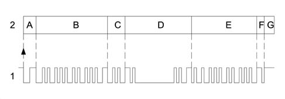
1 - Frame
2 - Blocks
A - Identifies the start of transmission or the beginning of a new frame (START OF FRAME) SOF) consists of 1 dominant bit and indicates to all other interfaced nodes to be synchronised to this SOF bit (wakes up any BUSES that may be in stand-by mode).
B - Identifier marks and identifies the content of a message. Also contains all information on message recipients. Arbitrage of the transmitted frame is carried out on this field. This means that the identification code uniquely identifies frame content and the priority assigned to it by the network architecture. (the lower the identification number, the higher the priority)
C - Control field indicates frame or message structure
D - Data to be transmitted (may be orders or information for transmission)
E - Control field; checks that data transmitted are not altered (message validity). The node or nodes that first detect the presence of an error emit a series of dominant notification bits, the transmitter node eliminates the message and emits a new frame after a certain time.
F- Reception confirmation (Aknowledment). All receiving nodes that use the message and have recorded the correct sequence from the transmitter node (recessive bit) overwrite the recessive bit with a dominant bit. In this way, the transmitting node is assured of correct message reception by at least one recipient. Each node checks the frame that it is receiving. If it finds it relevant, it accepts it and processes it. Otherwise it ignores it.
G - End of frame, message terminated. The end of frame allows (if no node begins a new transmission to the network (BUS)) the system to enter a state of inactivity (IDLE)
Management of priorities (superimposing or collision of non-desctructive frame)
The VE.N.I.CE system protocol can deal with problems of superimposition when several nodes wish to issue a frame simultaneously. Each control unit possesses an identification code that is also an expression of its priority. In practice, when a node (control unit) expresses its intention to send a frame on the network (BUS) by means of its intial bit and another node (control unit) does the same thing simultaneously, because both read network signals (as well as transmitting them), the node that finds a difference between the emitted signal and received signal can tell if the other node is emitting a higher priority frame. A node sending a lower priority message interrupts its transmission immediately to make way for the node transmitting a higher priority signal. In practice, the higher priority message is sent via the network without any interruption or delay. Naturally, the control units (nodes) that intended to send messages with lower priority and had to interrupt transmission to become receivers, resume transmission of their own frames when transmission is complete. This non-destructive superimposition is regulated by means of an arbitrage bit: one is known as the dominant bit and its value is zero (0). The other bit is said to be recessive and its value is equal to one (1).
Conflict of transmission between two nodes (ncm) and (nfr)
An example of transmission conflict (priority access) is shown below.
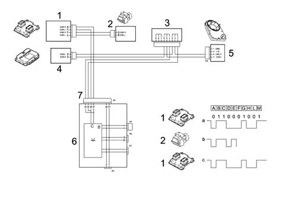
1 - I.E. engine control unit (node) (NCM)
2 - ABS brake system control unit (node) (NFR)
3 - Interconnection
4 - Robotised gearbox control unit (node) (NCR)
5 - Steering sensor control unit (node) (NAS)
6 - Body Computer control unit (node) (NBC)
7 - C-CAN line with high transmission speed
(a) Frame emitted by engine control node (NCM)
(b) Frame emitted byABS braking node (NFR): E = loss of priority or arbitrage of node 2, in point E
(c) Dominant frame on BUS of engine control node (NCM) transmitted on C-CAN network
The highest priority frame wins the possibility of transmitting a dominant level (0) on the BUS. A recessive level (1) always wins.
Simultaneous access of several control units to the network may give rise to conflict on the C-CAN line (BUS) the diagram shows that the engine control unit node (NCM) and the brake system control unit (NFR) send identical frames (data packages) at point (D); and from point (E) that have a discordant bit at the nodes (a) and (e).
Because the NFR node is simultaneously checking (reading) the frame as well as transmitting it, from this moment on as soon as the NFR node realises that the bit it wishes tot transmit (1) of recessive value will come up against a bit (0) of dominant value in the network, it immediately interrupts transmission of its frame (loss of arbitrage) to give way to the NCM node, which is transmitting a higher priority frame. It stands by until the NCM node has finished transmitting and the line becomes free. The frame transmitted along the network is from the NCM node. The NFR may now re-attempt to gain access to the line to send the frame it tried to send previously. Provided another collision does not occur.
Example of information sharing
The figure shows nodes interconnected via the CAN network.
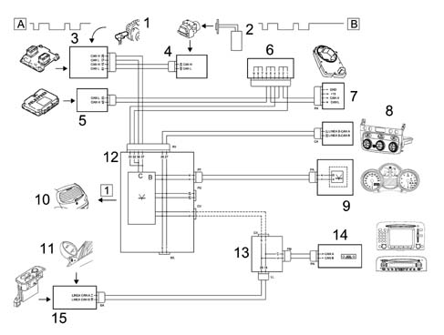
1 - Engine rpm sensor (RPM)
2 - Wheel sensor for ABS control unit
3 - I.E. engine control unit (NCM)
4 - ABS control unit (NFR)
5 - Selespeed control unit (NCR)
6 - Interconnection
7 - Steering sensor control unit (NAS)
8 - Climate control system control unit (NCL)
9 - Instrument panel control unit (NQS)
10 - Heated rear window
11 - Outside air temperature sensor
12 - Body Computer (NBC)
13 - Facia control unit
14 - Infotelematic/radio node (NIT/ NRR)
15 - Driver's door node (NPG)
A - Frame 1
B - Frame 2
Trama 1 nodo centralina motore (ncm) giri motore r.p.m.
Engine control unit (NCM) is the transmitting node. This processes the signal from its rpm sensor to manage its functions and also sends it to the C-CAN network (high transmitting speed) to make it available to all control units (nodes) that are in listening mode.
Each of these checks to see if the package is relevant to them.
In this case, the receiving control units in listening mode that recognise information required to manage their functions are as follows: instrument panel mode (NQS), Selespeed control unit (NCR), climate control system control unit (NCL) and body computer node (NBC).
The instrument panel node (NQS) uses this rpm information to govern the rpm gauge needle so that the driver can obtain information on engine rpm.
The Selespeed control unit (NCR) uses the same information to manage and control gear changes by controlling clutch, gearbox and engine torque directly. (The interface between the Selespeed control unit (NCR) and engine control unit (NCM) improves system performance by relieving the driver of any need to synchonise accelerator clutch movements during gear changes that could be carried out with the accelerator pressed to the floor)
The climate control unit (NCL) uses the same rpm information to manage activation of the supplementary heater (present only in JTD versions). In practice, the rpm information is associated with the battery charge status thus system voltage allows the climate control system (NCL) to keep up to date with engine conditions when the engine is running and whether the alternator is charging. If conditions are as specified,the 700W heater resistance circuit (PTC) can be supplied with power without problems. Once the data packages have been sent by the engine control unit (NCM), the control units in listening mode (NQS - NCR - NCL) execute the control within the required time.
The body computer node (NBC) fitted directly into the facia control unit (CPL) manages many functions via microelectronics. Let's take a look at the heated rear window timed demist function as an example.
The Body Computer (NBC) activates the supply to the heated rear window if:
- an INT signal is present (ignition key on),
- the facia control button connected to the climate control system ECU (NCL) is pressed (button pressed signal is sent to the body computer (NBC) via the CAN network.
Automatic rear window heater element operation is dependent on the engine rpm signal. The following activation/deactivation strategy is applied:
- For the first 10 minutes, operation does not depend on the engine speed
- The next 10 minutes are dependent on engine rpm
Engine rpm lower than 950 rpm: the rear window should go off after 10 minutes
Engine rpm higher than 950 rpm: heated rear window should go on or stay on if already activated until it has been effectively working for 20 minutes. It may be deactivated during this period of automatic operation only if battery voltage drops below 8.5 V ± 0.5 V.
If the button on the facia is repressed for at least for at least 50 ms or if the key is turned off, the heated rear window is deactivated.
Since rpm information from the engine control unit node (NCM) travels on the C-CAN network (high transmission speed) to reach the instrument panel node (NQS), which is connected to the B-CAN network (low transmission speed) it must be processed by the Body Computer (NBC) via the gateway function. Only after reprocessing does the body computer transfer the required information to the instrument panel node via the B-CAN network. (rev counter management)
The interface between the engine control unit (NCM) and Selespeed control unit (NCR) is immediate because both are connected to the same CAN network.
The other control units, which are not involved in the exchange of controls - e.g. the infotelematic or radio receiver node (NIT/NRR), that are in listening mode, read the information relayed down the BUS lines but do not process them because they are not essential for managing their functions.
Braking system node frame 2 (nfr) vehicle speed (speedometer signal)
The ABS control unit (NFR) is the transmitting node The receiving control unit are: Selespeed control unit (NQS), climate control sysem ECU (NCL), infotelematic/radio node (NIT/NRR) and Body Computer node (NBC).
The instrument panel node (NQS) uses vehicle speed informtion or speedometer signal to control the speedometer pointer km/mile/hour and manage the odometer function (mileometer, trip counter).
The Selespeed control unit (NCR) uses the speedometer signal because it is necessary and complementary to the engine rpm signal sent from the engine control unit (NCM) to manage gear shifts as comprehensively as possible.
The climate control unit (NCL) also uses the speedometer information to manage outside temperature information that it receives from the relevant sensor located on the door mirror via the driver's door node (NPG). In other words, if car speed does not exceed 30 km/h, the outdoor air temperature value is updated only if it is lower than the value stored previously when the key was turned to 'MARCIA' position If car speed exceds 30 km/h for at least 1 minute, the outdoor temperature value replaces the previously stored value, whether it is lower or higher.
The infotelematic node/radio node (NIT/NRR) uses vehicle speed information to manage sound intensity (radio volume)
The manner in which data is sent between the transmitting control unit and the receiving control units is as described for the PREVIOUS FRAME.
Serial line
This dedicated serial line ensures data exchange between the various electronic units (nodes Essentially, the serial line is a copper wire used for consecutive data transmission by alternating high voltage levels (H) and low voltage levels (L) in continuation, i.e.serially.
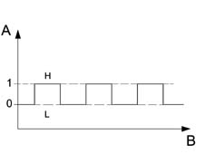
The figure above illustrates the High (H) and Low (L) voltage levels of the serial signal, i.e.:
- High (H) level: corresponds to a value higher than 80% of the battery voltage: logic level 1
- Low (L) level: corresponds to a value lower than 20% of the battery voltage: logic level 0
Example: with a battery voltage of 12 V:
- High (H) level = > 9.6 V;
- Low (L) level = < 2.4 V.
The data package communication protocol is defined by the baudrate, i.e. according to the number of bits (elementary message units) sent on the serial line in a second, i.e. baud rate
The transmission speed is generally low (1000 baud rate = 10 kb/sec) Many information items are sent and mean response time is a few seconds.
Control units connected to serial line k
The control units connected to serial line K are shown below:
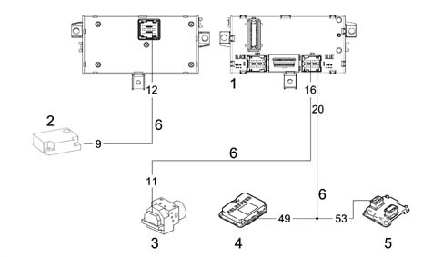
1 - Body Computer (NCM) front and rear view
2 - Air Bag Control Unit (CAB)
3 - ABS control unit (NFR)
4 - Selespeed control unit (NCR)
5 - Electronic injection control unit (NCM)
6 - Serial line K
Control units connected to dedicated lines (serial)
The control units connected to dedicated lines are shown below.
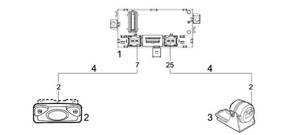
1 - Body Computer (NBC)
2 - Volumetric sensor control unit (CAV)
3 - Antitheft siren control unit (CSA)
4 - Dedicated serial lines
The serial line must be highly immune to electromagnetic interference. Each ECU is thus associated with a resistance and capacity circuit condenser that filters out interference.
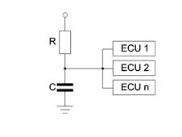
Transmission protocol
Circulation of transmission of data packages on serial lines is possible only if a transmission protocol is adopted. This is the set of rules that permits the exchange of data and commands between the various electronic units (control units or nodes). Each control unit is connected to its own serial line and is identified by a different address so that data package transfer is unequivocal. Data package transmission takes place from a transmitting control unit to another receiving control unit and is thus one-way. This operation involves the dispatch of a question package, which is followed by a response package. The information flow does not therefore involve a question/answer type exchange.
Data packages
The data package format (A) is unique but composed of two main parts: control (B) and outcome (C).
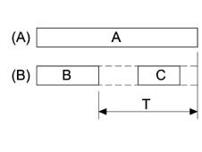
A - Package
B - Command: represents information sent by a control unit and contains a command and relevant data/parameters.
C - Outcome: confirmation of reception and execution of the command by the control unit to which it is sent.
T - Time within which the control unit sends the outcome.
Command format
A frame (1) consists of several blocks (2) or fields:
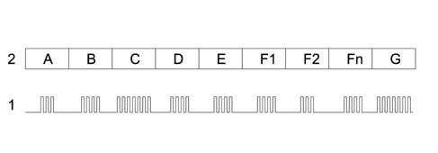
1 - Frame
2 - Block
A - 1 byte identifies the start of data transmission
B - address of the recipient control unit (ECU) is inserted
C - address of the sending (transmitting) control unit (ECU) is inserted
D - identifies control sent
E - identifies control data
F1- F2...Fn - sequence of all data associated with the control
G - Checksum (CKS)
The command part contains a set of information expressed in bytes, namely:
- Section A (HDR) is the first package byte and identifies the start of the transmission. - It is used to wake up and sychronise the high control units and prepare them to begin receiving data or information packages.
- Section B (DEST) or 'destination indicator' identifies the control unit for which the data package is destined. It is possible to identify up to 60 control units connected on the line: each control unit is allocated a different address so that the data package transfer is unique. Addresses are assigned by the network architecture.
- Section C (MITT) sending control unit address. Identifies the control unit that sends the command (i.e. transmitting ECU).
- Section D (CMD) data for transmission. Identifies the command sent on the serial line. Up to 255 different commands can be identified and sent via the network. The command list is set by the network architect.
- Section E (NBD) number of control data bytes. Identifies the number of bytes in the command (CMD) sent on the serial line. Each command may be associated with up to 255 bytes of data that make up the parameters. The values that may be assumed by each command are set by the network architect.
- Section F1-F2...FN, identifies the (NBD) sequence associated with the command.
- Section G (CKS) or CHECKSUM is a check to ensure the data package has been received correctly. It is calculated as the sum of all data package bytes (from HDR to FN)
Once data package reception is complete, the control units send the outcome to the transmitting unit. The outcome can be:
- ACK = command acknowledged and done
- NACK = command not acknowledged
- NAP = command not applicable
Outcome format
Once the command has been received, the receiving control unit (ECU) must send the outcome (within a specific time T) to the transmitting control unit to terminate the data package exchange.
Bit 7 | Bit 6 | Bit 5 | Bit 4 | Bit 3 | Bit 2 | Bit 1 | Bit 0 |
|---|---|---|---|---|---|---|---|
ESI_1 | ESI_0 | ECU | |||||
BIT 7, BIT 6 - Identifies the true outcome
BIT 5, BIT 4, BIT 3 - BIT 2, BIT 1, BIT 0 - identifies the address of the destination control unit (ECU).
The outcome information indicates::
- If BIT 7 is at level = (0) and BIT 6 is at level = (0) the command is acknowledged and executed. (because the commands and data received are correct and can therefore be executed by the control unit because it is one of its commands). (ACK)
- Ifl BIT 7 is at level = (0) and BIT 6 is at level = (1) the command is not acknowledged (because the command data received are incorrect) (NACK)
- If the BIT 7 is at level = (1) andBIT 6 is at level = (0) the command is not applicable (because although it has been correctly received and although it can be executed by the control unit because it is one of its commands; it cannot be executed with the control unit (ECU) in its current status Or it is not one of its commands (NAP).
- The combination BIT 7 level (1) and BIT 6 level (1) is not permitted
- The other six bits (from BIT 6 to BIT 0) identify the address of the command destination control unit and can therefore address up to 63 units.
Serial line status
During operation, the serial line can assume two distinct statuses:
- FREE LINE: identifies serial line resting state or free state, i.e. no transmission on the line. In this condition, the ECU can start transmitting.
- LINE BUSY: a transmission is in progress on the line. In this condition, each ECU (with the exception of the sender) stands by until the data package transmission ends.
Access to the line (conflict in transmission)
Two or more control units can begin to send information at the same time. This simultaneous access can create a conflict on the line; during transmission, the control units therefore check that every individual byte in the data package has been correctly sent. In practice, they check to ensure that what they have sent is the the same as what they have read on the line. If the comparison is negative, a transmission conflict has occurred. The transmission conflict immediately interrupts the data package transmission. Under these conditions, the control units immediately abstain from occupying the line for a set time (programmed) to ensure that all the other control units record the data package interruption.
Once this time has elapsed, the transmitting control units consider the line to be free again and gain access to transmission using the priority mechanism.
Access with priority
Each control unit is allocated a priority access code (Pa) which determines the circumstances under which the control units give up the line after recording a conflict. (The priority standard is established by the network architect).
In practice, any control unit (node) that is preparing to transmit, expresses its intentions to the other control units (nodes) by means of an initial bit.
If two control units (nodes) carry out this operation simultaneously they do not realise immediately but as soon as a transmitting control unit (node) detects a dominant symbol on the BUS, it immediately suspends transmission of messages with lower priority to make way for the control unit (node) that is sending the higher priority message. In practice, the higher priority message is sent via the network without any interruption or delay.
The control unit (nodes) that were intending to send messages with lower priority naturally interrupt their transmissions and set themselves to receive before re-attempting to send when the transmission is complete.
Because the dominant level is the lower level, small identifier numbers indicate high priority messages.
Access to the line after a conflict obeys the following rules:
The control unit waits for a given time (programmed) after the conflict and declares the line free..
Once the line is fere, the control unit waits for a further period determined by its priority code before gaining access to the line.
The line free condition does not herald the start of transmission but activates access with priority and transmission therefore starts. The transmission is carried out firstly by the control unit with the highest priority, which takes control of the line to prevent a new conflict. The other control units with lower priority codes that generated the conflict therefore switch to listening mode. Once the data package has terminated, they can attempt to regain access to the line in order to transmit the previously interrupted data package.
Transmission of a data package
Example of data transmission.
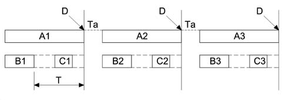
A - Package format
B - Command: represents information sent by a control unit and contains a command and its parameter/data
C - Outcome: confirmation of command reception and execution by the recipient control unit
D - Free line
T - Time (ms) within which the outcome must absolutely be sent
Ta - time instant as a consequence of which a control unit with a higher access priority takes control of the line to prevent new conflict.
Transmission of a data package between a transmitting control unit to the other control units connected to the network begins with the first byte (HDP) (this byte identifies the beginning and also wakes up the other control units at the beginning of package reception). It then continues with the command contents. Each control unit connected to the network swtiches to listening mode and determines, by means of the IND byte (address if the data package is addressed) At the end of command transmission, the receiving control unit processes it and transmits the outcoe.
OUTCOME - YES/OUTCOME - NO
If the control unit that permitted the command does not receive the outcome within the time required by the system, it considers that the command has not been sent and thus attempts to send the command again.
It does not repeat the command if the outcome is received within the required time.
A control unit in listening mode that identies a package not addressed to itself remains in listening mode until the end of data package transmission (i.e including outcome). The line is not occupied.
The other control units consider the data package terminated when the time required for sending the outcome has elapsed. From that moment on, they can use the line to send new data packages.